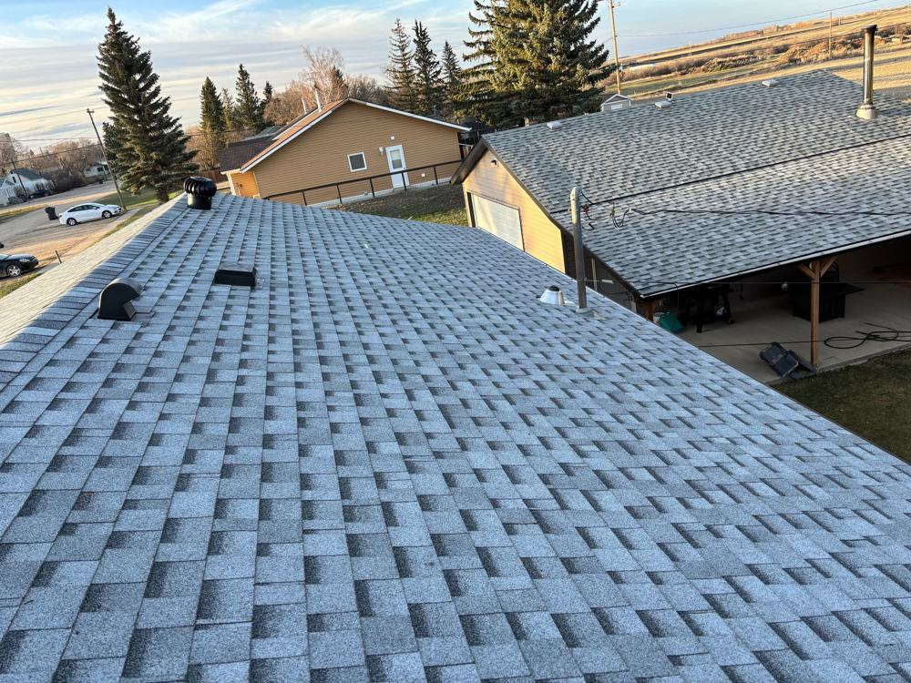

How to Prevent Ice Dams in a Prairie Winter

Every February in Saskatoon, the same thing happens: big ridges of ice build up along eaves, water starts dripping inside, and roofers' phones start ringing. Ice dams are probably the single most common winter roofing problem in the city, and they're almost always preventable.
Why they form
An ice dam starts in your attic, not on your roof. Heat escaping from your house warms the underside of the roof deck. Snow on the upper part of the roof melts, runs down, and refreezes when it hits the cold overhang past your exterior walls. That ridge of ice grows with every melt-freeze cycle, and eventually the water pooling behind it has nowhere to go but under your shingles and into your house.
Saskatoon's climate is perfect for this: long stretches well below freezing, then a sunny −5°C afternoon that melts the top layer just enough. Older homes in Caswell Hill, Nutana, and City Park are especially prone.
What actually fixes it
Heating cables. Run along the eaves and through the gutters and downspouts, they keep a drainage path open so meltwater runs off instead of pooling behind ice and backing up under your shingles. On a Saskatoon roof, that's the fix that works winter after winter — ice damming happens here when the sun melts snow on a −5°C afternoon, no matter what.
Placement matters: cables need to run in a zigzag along the eave edge, through the gutter, and down the downspout so the whole drainage path stays open. A proper install is a clean, straightforward job — and it ends the February drip for good.
What to do right now
If you've got dams forming this winter: don't hack at them with an axe or a shovel. You'll wreck your shingles. A roof rake can pull snow off the lower few feet of roof safely from the ground, which stops the dam from growing. For ice that's already there, calcium chloride in a nylon stocking laid across the dam will melt a drainage channel — never rock salt, which corrodes flashing and kills the grass below.
If dams are a yearly problem, get heating cables installed in the fall before the snow flies. It's a straightforward job, and it ends the February drip for good.